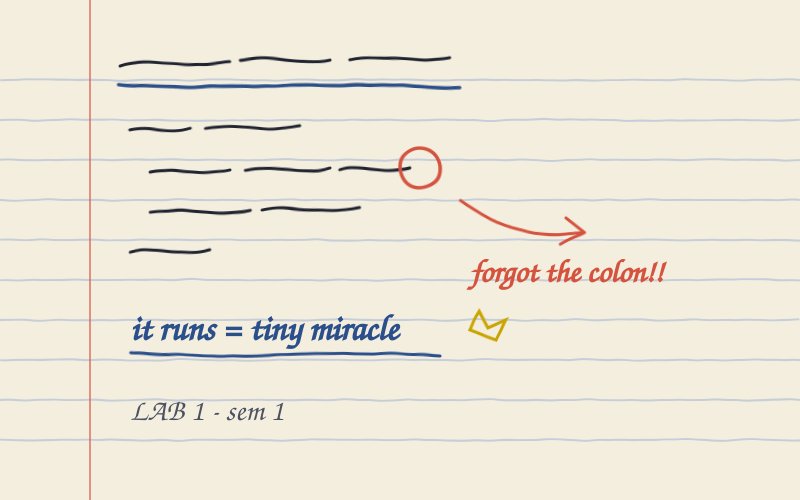
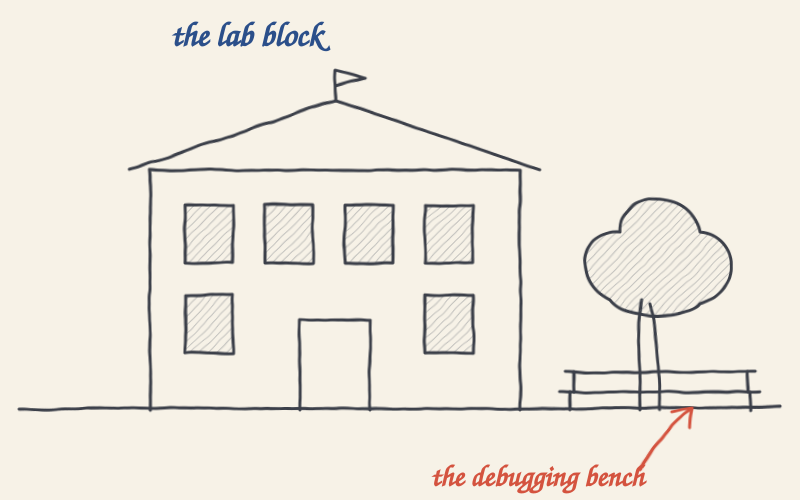
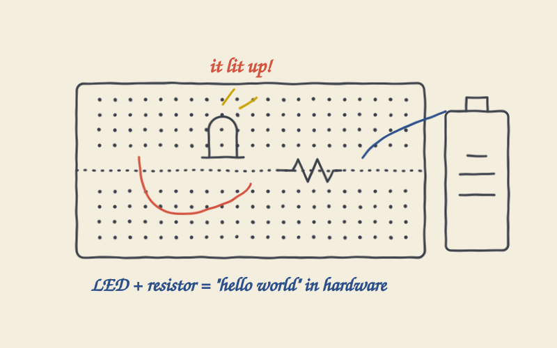

My 1st Year of Diploma
A year of first programs, full notebooks, and learning how to learn, including the parts that weren't on the syllabus.
In 2022 I started a diploma in Artificial Intelligence and Machine Learning at Government Polytechnic, Chh. Sambhajinagar. I expected a year of lectures. What I got was a year of firsts: the first program I wrote, the first error I couldn't explain, and the first time I realised that nobody was going to hand me the learning.
This is the notebook page I wish I'd read on day one.
📌 1The first lab
My first lab session was small and a bit anticlimactic. We were told to print one line of text to the screen. That was the whole task. It took me most of the session, mostly because of one tiny mistake I couldn't see.
yes, a colon. a whole colon.When it finally ran, I felt something out of proportion to the result. It wasn't about the line of text. It was the realisation that a few lines I'd typed had made a machine do exactly what I asked.
A program that runs is a small miracle. A program that runs for the right reason is the real one. — note to self, first lab

📌 2The syllabus, and the other syllabus
On paper, the year was a list of subjects. In practice, there was a second, unwritten syllabus running alongside it, and it taught me more:
- How to read an error message instead of panicking at it.
- How to ask a better question, with what I tried and what I expected.
- How to write things down, because I would not remember tomorrow.
- How to build something tiny and finish it, before building something big.
None of those showed up in an exam, but all of them showed up in everything I built afterwards.
One of my early programs calculated an average of marks. It worked perfectly, until someone added a fourth subject:
total = 0 for marks in [72, 85, 91]: total += marks print("Average:", total / 3) # worked... until the list had 4 items
I had hard-coded the 3. The fix was one word (len(...)), but the lesson
stuck: if a number describes the data, let the data tell you the number.
📌 3Where the real learning happened
The lecture hall was only part of it. A lot of my learning happened in the gaps in between: in the lab corridor, on a bench outside, over somebody's laptop with three of us staring at the same bug. Explaining a problem out loud to a friend solved it more often than the textbook did.

Most of my learning happened in the gaps between lectures, on a bench, over someone else's laptop. — what I'd tell first-year me
📌 4Making things you can touch
Somewhere in that year I also got curious about hardware: wires, LEDs, small circuits on a breadboard. It's a different kind of debugging, because the bug can be a loose jumper wire. Seeing a light turn on because of something I'd wired myself felt a lot like that first line of text in the lab.

📌 5What I'd tell first-year me
- Finish small things. A finished tiny project beats an abandoned big one.
- Write it down: the error, the fix, and why it worked.
- Sit near people who are better than you, and ask them questions.
- Be patient. The confusing parts are usually the parts that are teaching you.
The first year wasn't about knowing things. It was about building the habits (reading errors, writing notes, finishing small projects) that every later year was built on.
— Yash